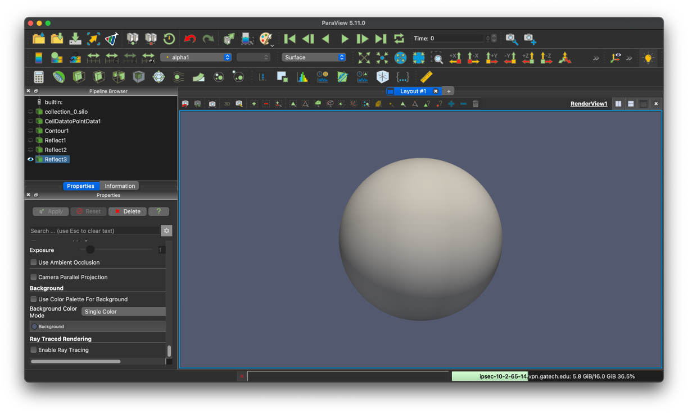

|
MFC
High-fidelity multiphase flow simulation
|
|
MFC
High-fidelity multiphase flow simulation
|
A post-processed database in Silo-HDF5 format can be visualized and analyzed using Paraview and VisIt. After the post-processing of simulation data (see section Running), a directory named silo_hdf5 contains a silo-HDF5 database. Here, silo_hdf5/ includes a directory named root/ that contains index files for flow field data at each saved time step.
Paraview is an open-source interactive parallel visualization and graphical analysis tool for viewing scientific data. Paraview 5.11.0 has been confirmed to work with the MFC databases for some parallel environments. Nevertheless, the installation and configuration of Paraview can be environment-dependent and are left to the user.
The user can launch Paraview and open the index files under /silo_hdf5/root. Once the database is loaded, flow field variables contained in the database can be added to the render view. Further information on Paraview can be found in its documentation. The figure below shows the iso-contour of the liquid void fraction (alpha1) in the database generated by the example case 3D_sphbubcollapse.

Visualizing data in cylindrical coordinates requires a coordinate transformation of the raw data in the database file. In Paraview, this coordinate transformation can be accomplished with the following steps:
These steps will transform the raw data into cylindrical coordinates. For many cases, this step will require resizing the render view window.
VisIt is an alternative open-source interactive parallel visualization and graphical analysis tool for viewing scientific data. Versions of VisIt after 2.6.0 have been confirmed to work with the MFC databases for some parallel environments. Nevertheless, installation and configuration of VisIt can be environment-dependent and are left to the user. Further remarks on parallel flow visualization, analysis, and processing of the MFC database using VisIt can also be found in Coralic (2015) and Meng (2016).
The user can launch VisIt and open the index files under /silo_hdf5/root. Once the database is loaded, flow field variables contained in the database can be added to the plot. The figure below shows the iso-contour of the liquid void fraction (alpha1) in the database generated by the example case 3D_sphbubcollapse. For analysis and processing of the database using VisIt's capability, the user is encouraged to address VisIt user manual.

Iso-contour of the liquid void fraction (alpha1) in the database generated by example case 3D_sphbubcollapse
If parallel_io = 'F', MFC will output the conservative variables to a directory D/. If multiple cores are used ($\mathtt{ppn > 1}$), then a separate file is created for each core. If only one coordinate dimension (n = 0 and p = 0) exists, the primitive variables will also be written to D/. The file names correspond to the variables associated with each equation solved by MFC. They are written at every t_step_save time step. The conservative variables are
$$ {(\rho \alpha)}_{1}, \dots, (\rho\alpha)_{N_c}, \rho u_{1}, \dots, \rho u_{N_d}, E, \alpha_1, \dots, \alpha_{N_c} $$
and the primitive variables are
$$ {(\rho \alpha)}_1, \dots, (\rho\alpha)_{N_c}, u_1, \dots, u_{N_d}, p, \alpha_1, \dots, \alpha_{N_c} $$
where $N_c$ are the number of components num_fluids and $N_d$ is the number of spatial dimensions. There are exceptions: if model_eqns = 3, then the six-equation model appends these variables with the internal energies of each component. If there are sub-grid bubbles bubbles = T, then the bubble variables are also written. These depend on the bubble dynamics model used. If polytropic = 'T', then the conservative variables are appended by
$$ n_b R_1, n_b {\dot R}_1, \dots, n_b R_{N_b}, n_b {\dot R}_{N_b} $$
where $n_B$ is the bubble number density, and $N_b$ is the number of bubble sizes (see the matching variable in the input file, Nb). The primitive bubble variables do not include $n_B$:
$$ R_1, {\dot R}_1, \dots, R_{N_b}, {\dot R}_{N_b} $$
Begin by downloading the .zip file here. This file contains two things:
Place the file paceParview.zip in your scratch direction on Phoenix and unzip it using unzip paceParaview.zip. Enter the new directory paceParaview and run tar -xvf ParaView-5.11.0-egl-MPI-Linux-Python3.9-x86_64.tar.gz to decompress the compiled binary. Now that you have the binary on Phoenix, you must download Paraview 5.11 on your local machine. Paraview binaries can be downloaded here. Select v5.11 from the version drop-down bar and install a 5.11.0 version of Paraview.
While all of the bash script's options could be passed as command-line arguments, hardcoding certain unlikely-to-change options saves time. The following is a list of required and suggested updates to make to pace-paraview-server.
Before running pace-paraview-server for the first time, you must update its permissions by running chmod u+x pace-paraview-server in your command line. Once this has been done, you can run ./pace-paraview-server with the following options:
Once you run ./pace-paraview-server <options>, it'll take a bit to start up. In the meantime, you'll see the below message:
When initializing is done, you should see a dialogue with some recommended next steps, numbered 1-4. Below is a slightly altered version of that dialogue:
1) Create the appropriate port forwarding for your local ParaView session to connect with.
2) Once you have Paraview5.11.0 on your machine, select File -> Connect.. to open the remote connection dialogue box.